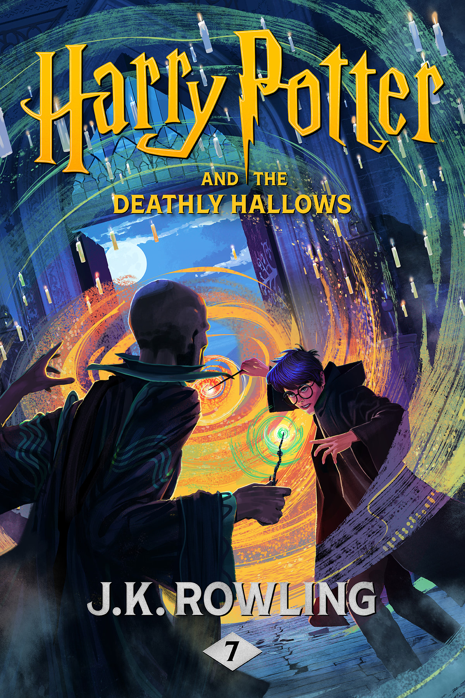
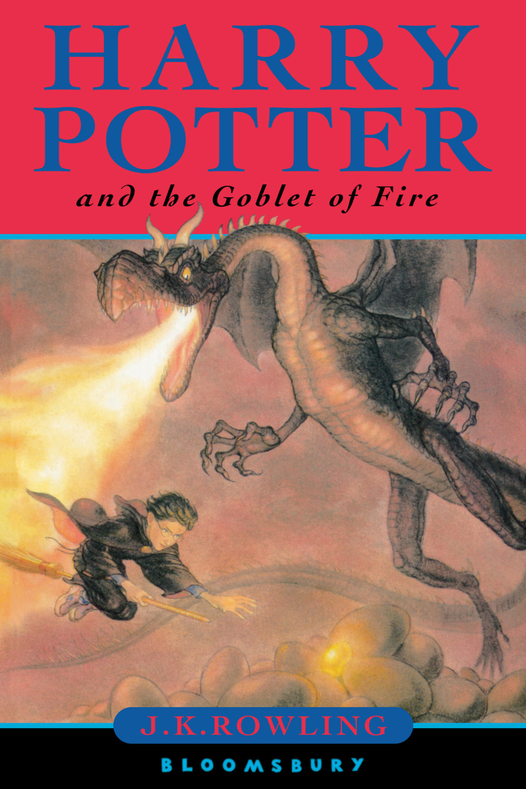
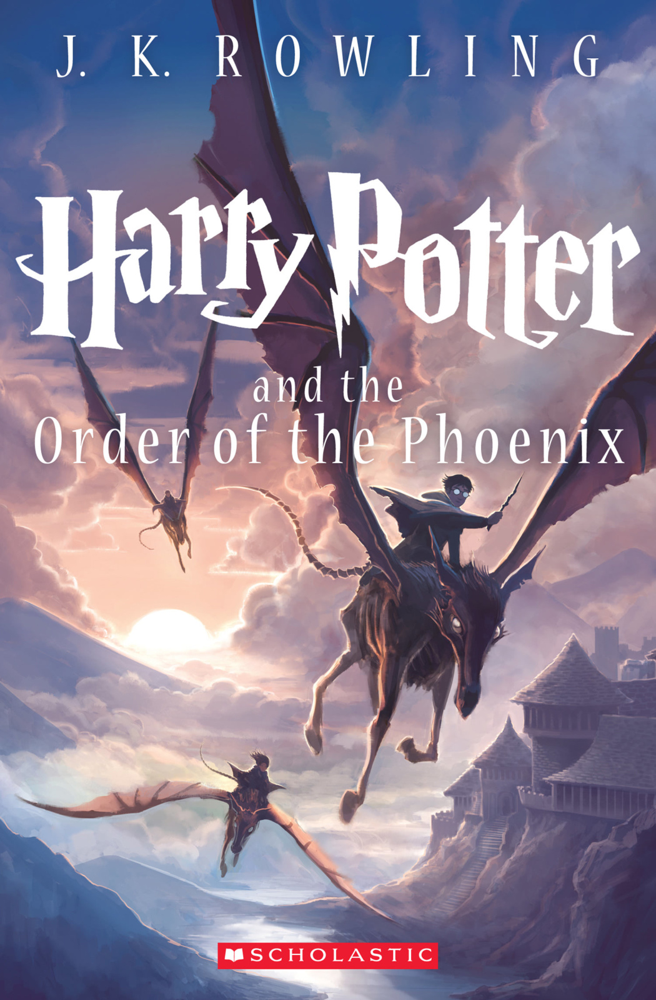
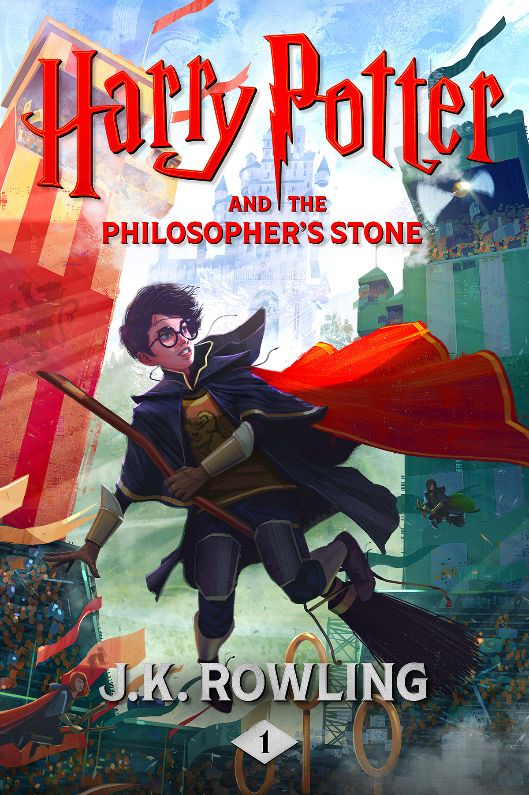
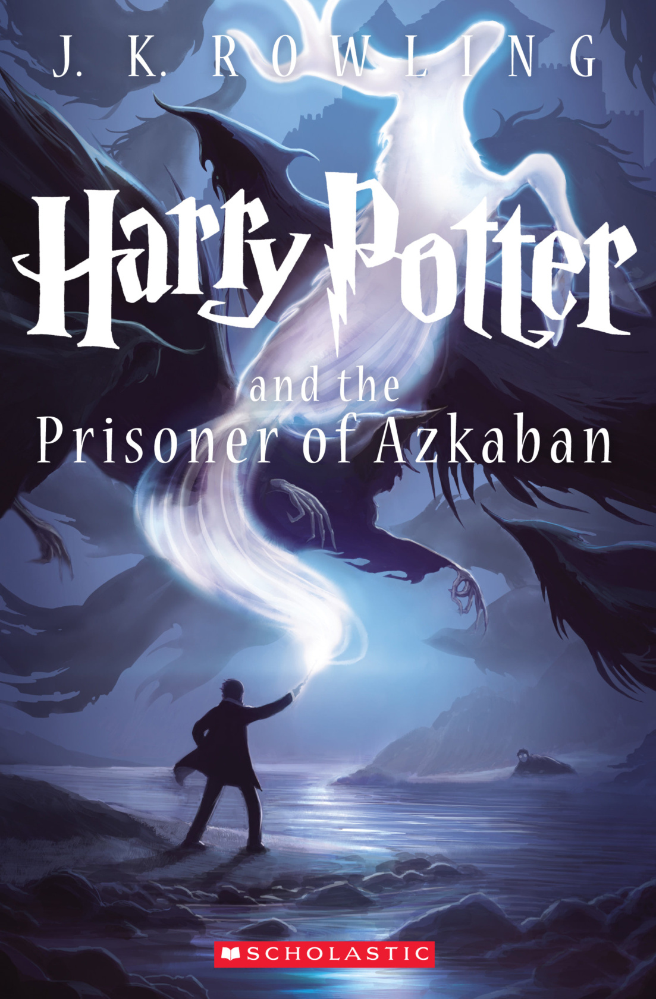
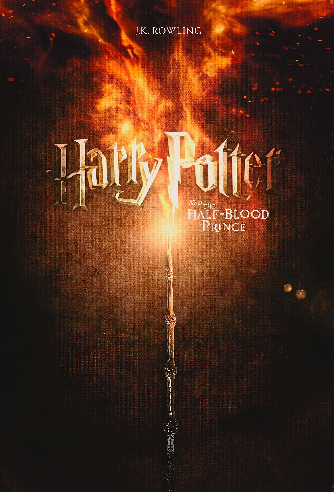
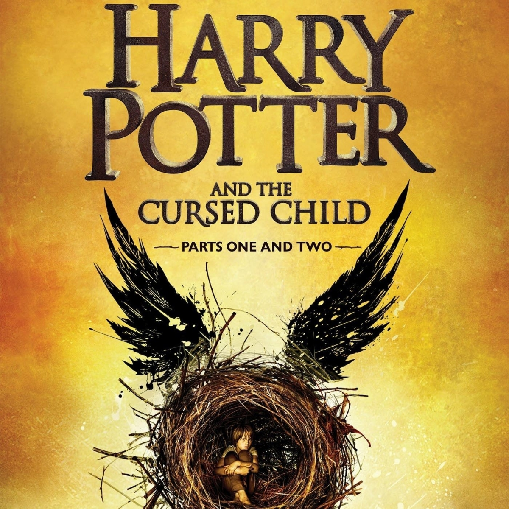

HarryPotter Book Gallery
Harry Potter and the Deathly Hallows

Auther : J. K. Rowling
Harry Potter and the Deathly Hallows is a fantasy novel written by British author J. K. Rowling and the seventh and final novel of the main Harry Potter series. It was released on 21 July 2007 in the United Kingdom by Bloomsbury Publishing, in the United States by Scholastic, and in Canada by Raincoast Books.
Harry Potter and the Globet of Fire

Auther : J. K. Rowling
The Tri-Wizard Tournament is open. Four champions are selected to compete in three terrifying tasks in order to win the Tri-Wizard Cup. Meanwhile, Harry Potter (Daniel Radcliffe) is selected by the Goblet of Fire to compete while struggling to keep up the pace with classes and friends.
Harry Potter and the Order of Phoenix

Auther : J. K. Rowling
It follows Harry Potter's struggles through his fifth year at Hogwarts School of Witchcraft and Wizardry, including the surreptitious return of the antagonist Lord Voldemort, O.W.L. exams, and an obstructive Ministry of Magic.
Harry Potter and the Philosophers Stone

Auther : J. K. Rowling
A boy who learns on his eleventh birthday that he is the orphaned son of two powerful wizards and possesses unique magical powers of his own . He is summoned from his life as an unwanted child to become a student at Hogwarts , an English boarding school for wizards . There , he meets several friends who become his closest allies and help him discover the truth about his parents mysterious deaths .
Harry Potter and the Prisoner of Azkaban

Auther : J. K. Rowling
Harry Potter's third year at Hogwarts starts off badly when he learns deranged killer Sirius Black has escaped from Azkaban prison and is bent on murdering the teenage wizard. While Hermione's cat torments Ron's sickly rat, causing a rift among the trio, a swarm of nasty Dementors is sent to protect the school from Black. A mysterious new teacher helps Harry learn to defend himself, but what is his secret tie to Sirius Black?
Harry Potter and Half Blood Prince

Auther : J. K. Rowling
As Death Eaters wreak havoc in both Muggle and Wizard worlds, Hogwarts is no longer a safe haven for students. Though Harry suspects there are new dangers lurking within the castle walls, Dumbledore is more intent than ever on preparing the young wizard for the final battle with Voldemort. Meanwhile,presenting a different sort of danger. Love may be in the air, but tragedy looms, and Hogwarts may never be the same again.
Harry Potter and the Chamber of Secrets

Auther : J. K. Rowling
The second instalment of boy wizard Harry Potter's adventures at Hogwarts School of Witchcraft and Wizardry, based on the novel by JK Rowling. A mysterious elf tells Harry to expect trouble during his second year at Hogwarts, but nothing can prepare him for trees that fight back, flying cars, spiders that talk and deadly warnings written in blood on the walls of the school.
Harry Potter and the Cursed Child

Auther : J. K. Rowling
“Harry Potter and the Cursed Child” is about the journey Albus takes while growing up, and the roles he and his best friend, Scorpius (Draco Malfoy's son), play when dark forces, perhaps in league with Voldemort, once again threaten the fate of the planet.